Ghid complet pentru machiaj Soft Glam
Machiaj Soft Glam pas cu pas
Un look elegant și delicat, fără încărcare excesivă
Top produse pentru machiaj Soft Glam
Texturi naturale cu finisaj satinat și luminos
Produse premium pentru Soft Glam
Efect de machiaj „scump” și ten perfect
Set buget Soft Glam (până la 500 MDL)
Set minimal pentru un look elegant și rafinat
Programează-te la un make-up artist profesionist
Obține un machiaj Soft Glam care îți evidențiază trăsăturile, uniformizează tenul și creează un efect elegant, delicat și perfect armonizat în orice lumină.
Ce este machiajul Soft Glam
Machiajul Soft Glam este o tehnică ce creează un look delicat, elegant și îngrijit, punând accent pe frumusețea naturală a feței. Este un echilibru între machiajul natural și cel de seară, fără linii dure sau efect de încărcare.
Acest tip de machiaj este cunoscut și ca soft glam look, natural glam sau machiaj glam delicat. El evidențiază trăsăturile feței, oferindu-le mai multă expresivitate, dar păstrând un aspect lejer și armonios.
Spre deosebire de machiajul de seară intens, aici se folosesc texturi bine estompate, nuanțe neutre și tranziții fine. Tenul arată uniform și îngrijit, ochii sunt definiți, iar rezultatul final este elegant și „scump”.
Soft Glam este ideal pentru nunți, ședințe foto, evenimente speciale și eleganță de zi cu zi, oferind un aspect proaspăt, rafinat și vizibil mai tânăr.
👉 Mai multe despre machiaj pentru ten gras
👉 Mai multe despre machiaj pentru ten uscat
De ce machiajul Soft Glam face tenul mai fresh și îngrijit
- creează un efect de look curat și bine definit
- accentuează trăsăturile fără duritate sau încărcare
- uniformizează vizual tenul și netezește textura pielii
- oferă un aspect mai tânăr și armonios feței
- arată elegant și „scump”, chiar și cu produse puține
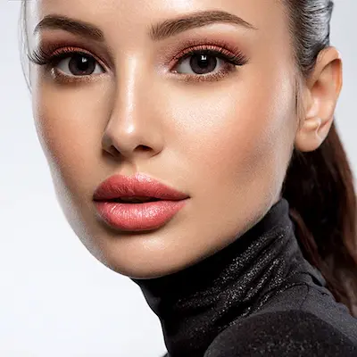
Pregătirea pielii pentru machiajul Soft Glam
Machiajul Soft Glam începe cu o pregătire corectă a pielii. Chiar și cele mai bune produse nu pot crea efectul de ten neted și perfect uniform dacă pielea este deshidratată sau are o textură neuniformă.
Îngrijirea corectă ajută la obținerea unui ten uniform, luminos și permite aplicarea machiajului într-un mod lejer, fără efect de încărcare.
- Curățare — produs delicat care nu usucă pielea
- Hidratare — cremă sau ser pentru elasticitate și netezime
- SPF — protecție UV și menținerea unui ten uniform
- Bază de machiaj — uniformizează textura și crește rezistența machiajului
Înainte de aplicarea machiajului, este important să aștepți 5–10 minute pentru absorbția completă a produselor. Acest pas ajută la un finisaj uniform și previne încărcarea sau strângerea produselor pe piele.
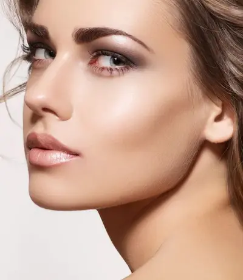
Top produse pentru machiajul Soft Glam
Pentru Soft Glam este important să alegi produse cu finisaj delicat, blenduire ușoară și efect de „a doua piele”, care evidențiază trăsăturile fără să le încarce.
Recenzie independentă. Produsele nu sunt sponsorizate.
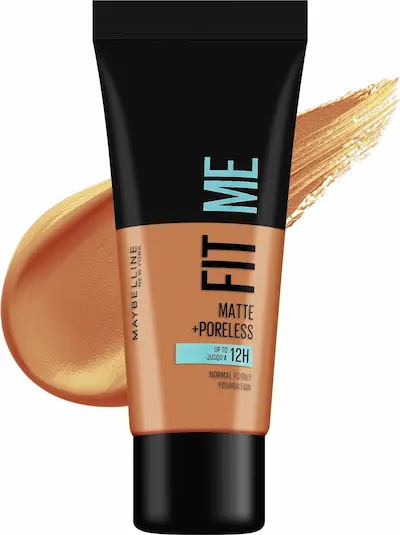
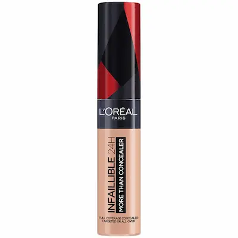
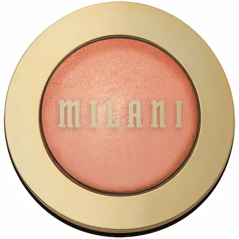
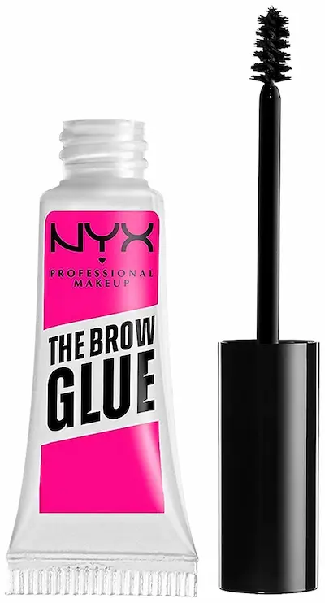
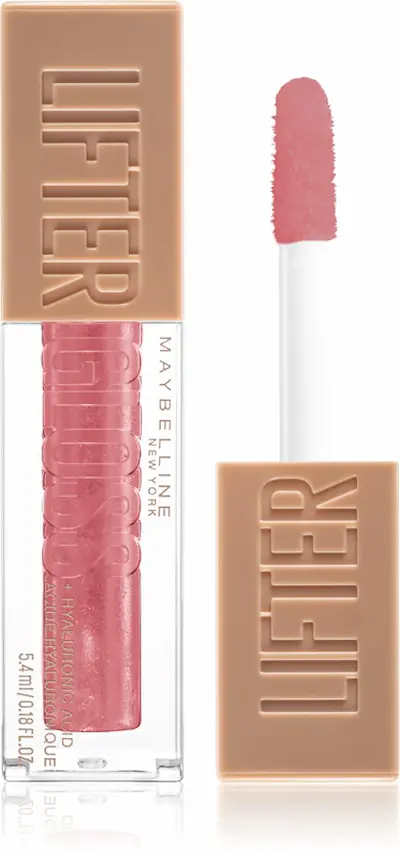
Greșeli frecvente în machiajul Soft Glam
- fond de ten prea dens și „greu”, fără aspect natural
- linii dure și estompare slabă a fardurilor
- conturare prea închisă sau încărcată
- iluminator în exces cu particule vizibile de sclipici
- sprâncene prea încărcate și formă prea grafică
Machiajul Soft Glam poate fi ușor stricat: în loc de un look elegant și „scump”, se poate obține un machiaj încărcat sau neuniform. Principiul de bază este finețea, estomparea și echilibrul perfect între accente.
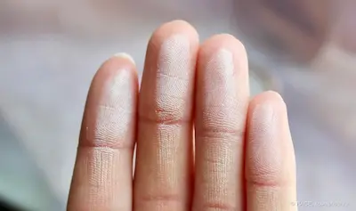
Kit buget pentru machiaj Soft Glam (până la 500 MDL)
💡 Cost total estimat: ~450–520 MDL
Review independent. Produsele nu sunt sponsorizate.
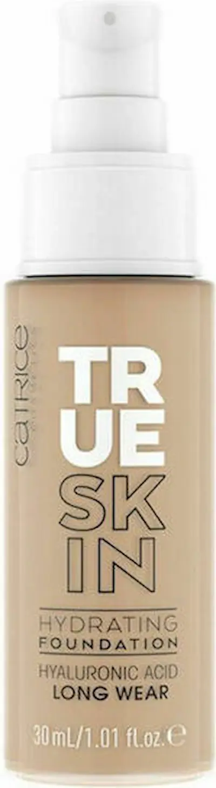
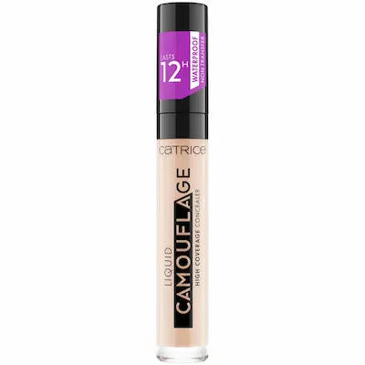
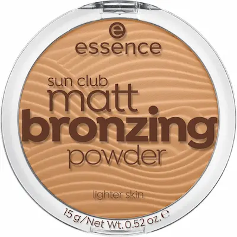
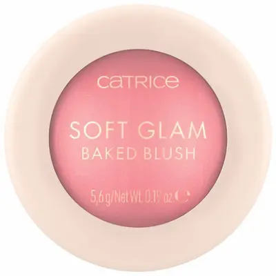
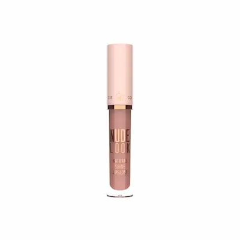
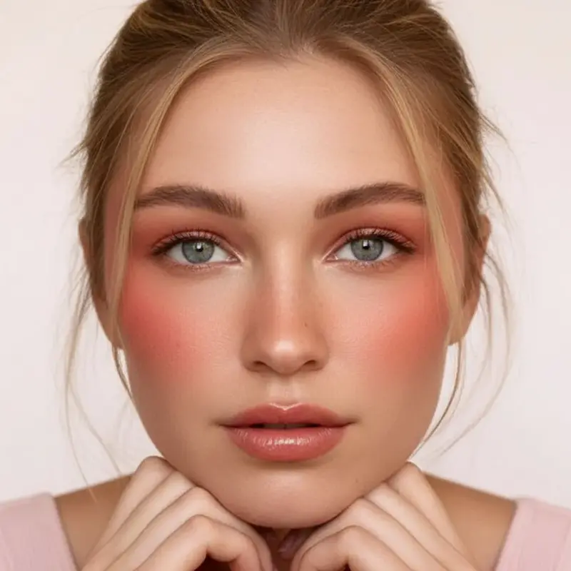

Nu ești sigură cum să obții un machiaj Soft Glam perfect?
Machiajul Soft Glam necesită un echilibru fin între texturi, estompare și tonuri naturale. Dacă aplici produse prea grele sau nu estompezi corect, look-ul poate pierde din eleganță și poate părea încărcat în loc de „scump” și rafinat.
Programează-te la un make-up artist profesionist și obține un machiaj Soft Glam care îți evidențiază trăsăturile, uniformizează tenul și creează un efect elegant, delicat și perfect armonizat în orice lumină.
Programează-te pentru machiajCum să obții efectul Soft Glam (look elegant și delicat)
Cea mai frecventă greșeală în machiajul Soft Glam este aplicarea unui look prea intens sau prea încărcat. Acest stil este despre finețe, estompare perfectă și echilibru, nu despre contraste puternice sau texturi grele.
1. Tenul perfect este baza
Pielea trebuie să arate uniformă, netedă și îngrijită. Alege un fond de ten cu finish natural sau satinat, fără efect de mască.
2. Estompare fină a fardurilor
În Soft Glam nu există linii dure. Fardurile trebuie să se îmbine perfect, creând un efect de „ceață” și profunzime în privire.
3. Conturare discretă
Conturul trebuie să fie subtil și aproape invizibil. Doar o umbră delicată care definește trăsăturile feței.
4. Echilibru între glow și mat
Iluminatorul trebuie să fie fin și controlat. Scopul este efectul de „piele scumpă”, nu de luciu excesiv.
5. Accent, dar fără exagerare
Soft Glam înseamnă echilibru: fie accent pe ochi, fie pe buze. Prea multe accente pot încărca și strica armonia look-ului.
Soft Glam ideal este acel machiaj care arată elegant, curat și perfect estompat — ca și cum trăsăturile tale ar fi doar evidențiate subtil, nu machiate intens.
Întrebări frecvente despre machiajul Soft Glam
Este potrivit Soft Glam pentru tenul gras?
Da. Important este să pregătești corect pielea și să folosești produse ușor matifiante în zona T. Soft Glam nu necesită un glow intens, deci se adaptează ușor tenului gras sau mixt.
Prin ce diferă Soft Glam de machiajul de seară?
Soft Glam este mai delicat și mai natural. Nu are linii dure sau texturi grele — accentul este pus pe estompare fină, nuanțe neutre și un efect de piele „luxoasă”.
Se poate face Soft Glam pe ten cu acnee?
Da. Se recomandă o acoperire medie și corecție punctuală. Este important să estompezi bine produsele și să eviți straturile groase pentru a păstra un aspect natural.
Este Soft Glam potrivit pentru machiajul de zi cu zi?
Da, este unul dintre cele mai versatile stiluri. Într-o variantă mai ușoară — fără contur intens și accente puternice — este perfect pentru birou, întâlniri și look-uri zilnice.
Este obligatoriu conturul în Soft Glam?
Nu. Conturul poate fi folosit, dar trebuie să fie foarte subtil și bine estompat. Scopul este să evidențieze trăsăturile, nu să le schimbe.
Cum obții efectul de machiaj „scump”?
Secretul Soft Glam stă în detalii: ten uniform, tranziții fine ale fardurilor, sprâncene îngrijite și nuanțe armonioase. Evită liniile dure și supraîncărcarea pentru un look curat și echilibrat.